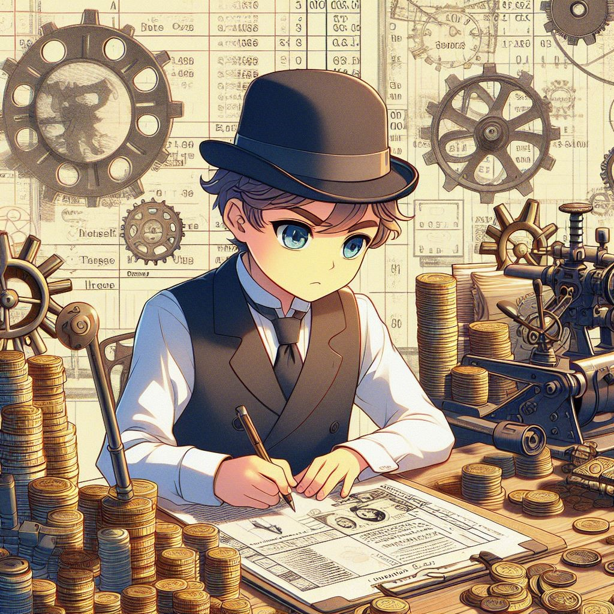

Indietro

Alessandro Pala
22-01-2024
Cosa si intende di salari?
La nascita delle fabbriche e le condizioni di lavoro
Nella prima rivoluzione industriale, il salario è la retribuzione in denaro che gli operai ricevevano in cambio del proprio lavoro nelle fabbriche.
I salari erano generalmente bassi e non erano sufficienti a garantire un tenore di vita dignitoso agli operai. I motivi di questa situazione erano molteplici:
La domanda di lavoro era elevata: l'aumento della produzione industriale ha portato a un aumento della domanda di lavoro, che ha abbassato i salari.
L'offerta di lavoro era elevata: l'afflusso di lavoratori dalle campagne alle città ha aumentato l'offerta di lavoro, che ha ulteriormente abbassato i salari.
La concorrenza tra gli operai era forte: gli operai erano disposti a lavorare per salari bassi per paura di perdere il lavoro.
L'evoluzione dei salari nella prima rivoluzione industriale può essere riassunta in tre fasi principali:
Fase iniziale (1750-1800): i salari erano bassi e non erano sufficienti a garantire un tenore di vita dignitoso agli operai.
Fase di sviluppo (1800-1850): i salari iniziarono a crescere, ma rimanevano comunque bassi.
Fase di maturità (1850-1900): i salari continuarono a crescere, ma ancora non erano sufficienti a garantire un tenore di vita dignitoso agli operai.
I bassi salari erano una delle principali cause delle proteste degli operai, che si organizzarono in sindacati per chiedere un miglioramento delle condizioni di lavoro e dei salari.
Ecco alcuni dei principali fattori che hanno contribuito all'aumento dei salari nella prima rivoluzione industriale:
L'aumento della produttività: l'utilizzo delle macchine ha permesso di aumentare la produttività del lavoro, rendendo possibile un aumento dei salari.
La diffusione dell'istruzione: l'aumento dell'istruzione ha reso gli operai più qualificati e ha permesso loro di ottenere salari più alti.
La formazione dei sindacati: i sindacati hanno svolto un ruolo importante nella lotta per l'aumento dei salari.
L'aumento dei salari nella prima rivoluzione industriale fu un processo graduale, che si concluse solo alla fine del XIX secolo.
